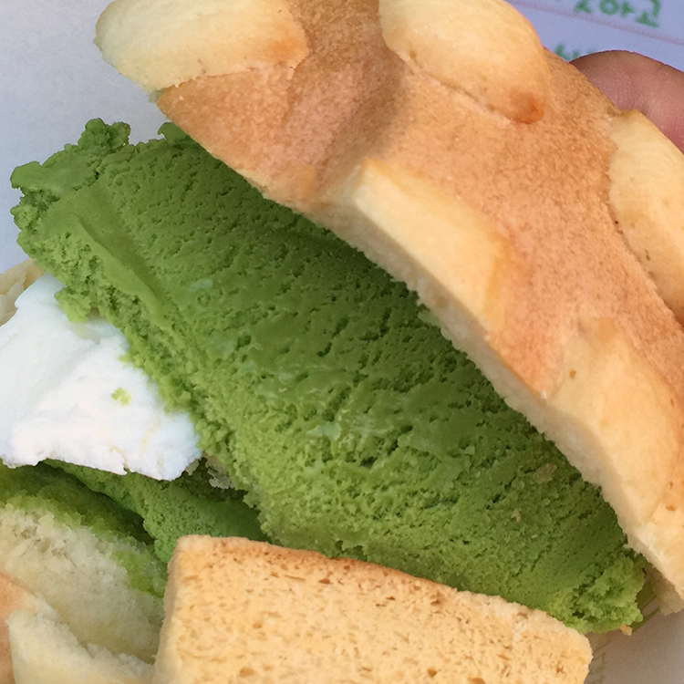

For those who are not familiar with Japanese food, you are in for a mouthwatering visual treat. These are nine delicious dishes from the Land of the Rising Sun. Click on the buttons to see the full versions of the photos.
Curry
Gyoza
Kobe Beef
Melon Pan

Okonomyaki
Ramen
Tempura
Sushi
Yakisoba
Curry
Japanese-style curry is comforting, homey, dish comprised of sweet and savory flavors. This curry is often found spooned over rice with a variety of different toppings.
Gyoza
These dumplings are often filled with minced pork, chopped cabbage, chives, ginger, and garlic. They are often accompanied by a dipping sauce.
Kobe Beef
Kobe Beef is a luxury food that comes from Wagyu cattle. This meat is famous for being deliciously fatty and delicate.
Melon Pan
Melon pan is a sweet honeydew-flavored bread topped with a cookie-like, crust. This particular dessert uses melon pan as the bread for a matcha ice cream sandwich.
Okonomyaki
Okonomiyaki is a pancake is made with cabbage, seafood, and fatty pork. The toppings include a sweet brown sauce, mayonnaise, dried bonito shavings, and nori flakes.
Ramen
Ramen can be found everywhere in Japan! A typical bowl of ramen features noodles, toppings, and most importantly, a flavorful broth.
Tempura
Who doesn't love fried food? The Japanese like to fry a wide variety of foods, from sweet potato to shrimp, in delicate, crispy, tempura batter.
Sushi
Sushi is a beloved food where fish and seafood are served raw on top of rice. Chefs have to train for several years to become masters at the art of sushi-making.
Modal title
Yakisoba is a stir-fried noodle dish. These savory noodles are often tossed in a brown sauce, seared pork, pickles, and sliced cabbage.